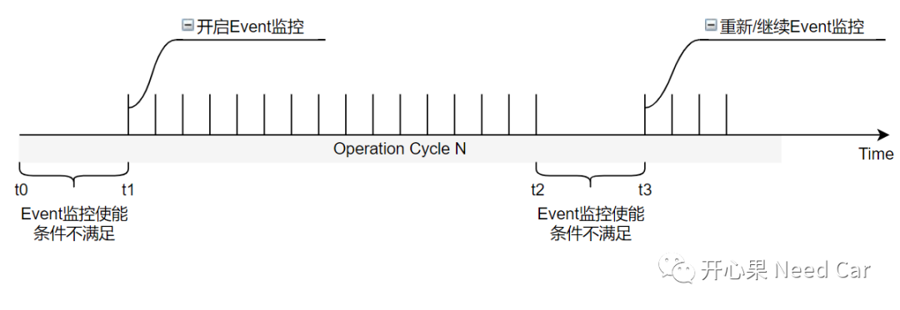
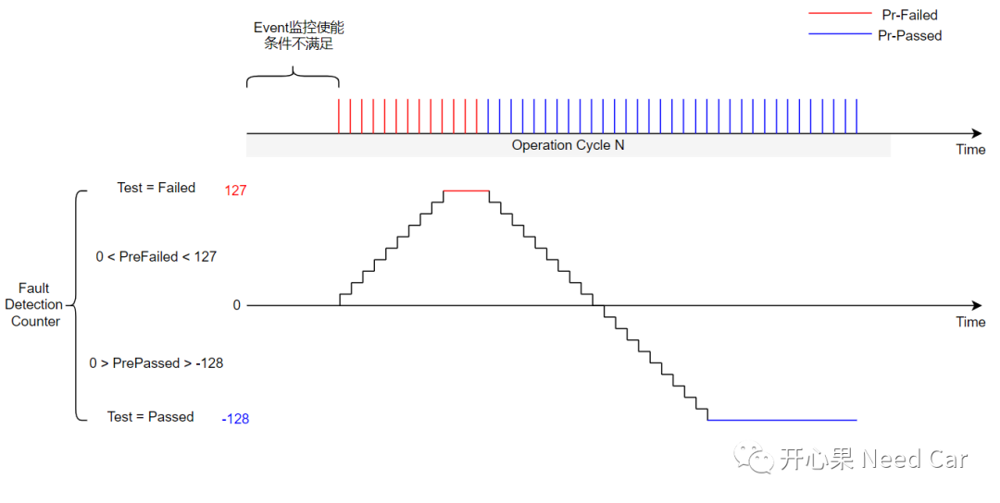
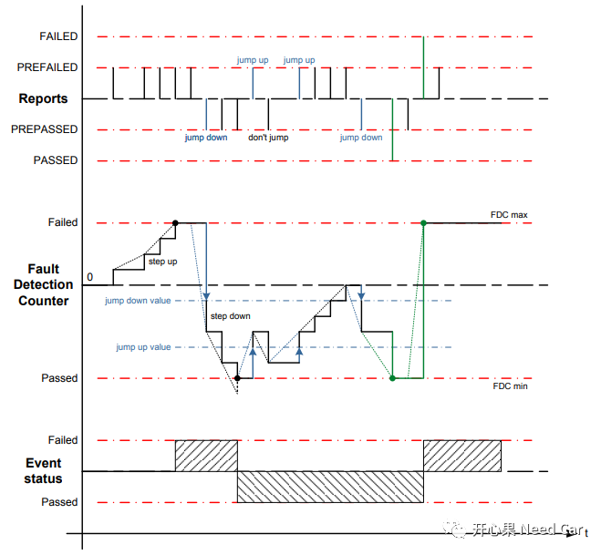
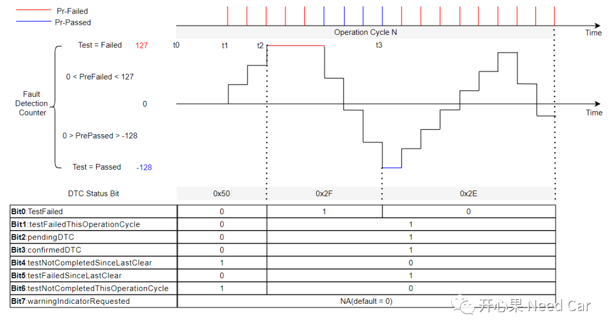
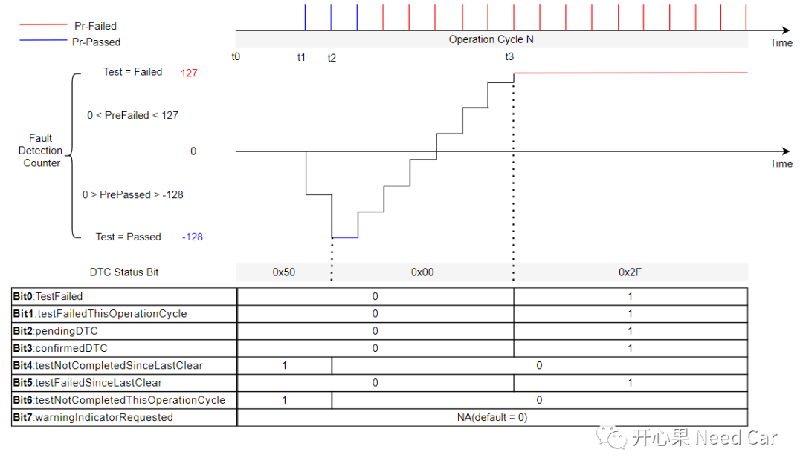
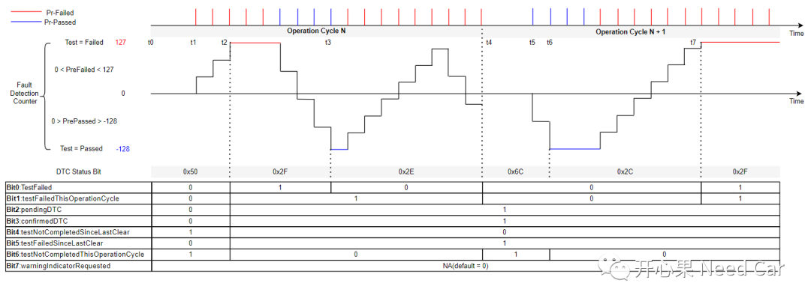
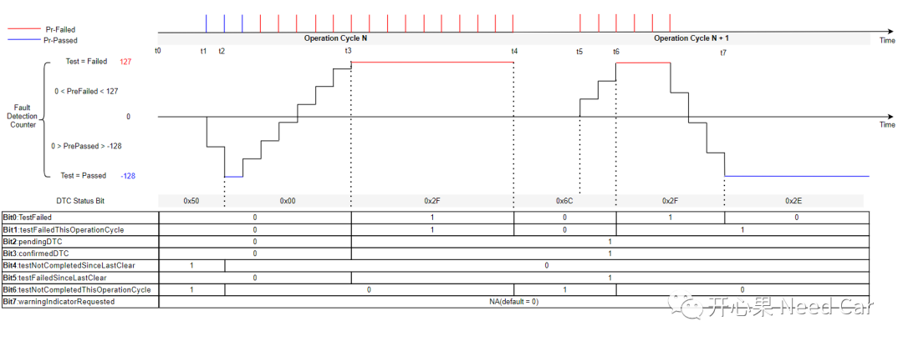

在Autosar DEM诊断事件管理（一）一文中，聊过DTC Status Bit，说了一下每个bit的作用。本文，结合工程实际，聊一聊不同Operation Cycle下的DTC状态位变化情况。
在理解DTC每个状态位之前，我们需要先清楚DTC的产生过程。
当车辆出现问题时，需要将故障对应的信息存储下来，以便于车辆维修时快速定位问题原因，这些存储的信息中就包括DTC状态位信息。车辆出现故障是“果”，对应的“因”是什么呢？为了确保驾/乘人员的安全，车辆行驶过程中，会监控车辆的各种性能参数，比如：某继电器是否开路。如果继电器开路这个事件(Event)发生，就产生了“因”。每个ECU会将需要监控的Event对应一个DTC，当监控的事件(Event)发生时，该Event对应的DTC就会存储DTC状态位等故障信息（快照数据、拓展数据等）。
1、Event监控使能条件要满足
为了减少DTC的误报，需求中会定义Event监控的使能条件，因为每个Event的监控使能条件不同，这里只列举部分示例：
诊断电压：诊断电压是否满足9~16V，如果诊断电压不满足，不启动Event的监控。但是，电压超限的故障需要报。
延时启动时间：驾驶模式切换时，为了确保车辆工况稳定，需要延时一定时间再使能Event的监控。比如：Driving Mode切换Sport Mode，延时5s监控使能，如果模式刚切换就监控，车辆工况不稳定，很可能导致DTC的误报。
如下所示，t0~t1、t2~t3时间段内，Event的监控条件不满足，此时间不必再报对应的DTC，当监控条件再次满足后，可以在上次监控的基础上继续监控或者重新对该Event监控（取决于项目需求）。

2、Event去抖
在DEM的设计中，使用Step Up、Step Down、Jump Up、Jump Down、Failed/Passed Threshold Value实现去抖。举例：Failed Threshold Value ＞ 127时，故障确认发生，需要上报Failed状态，即：已经上报了至少10次（Pre-Failed）该事件。Step Up * 10 > 127，所以Step Up = 13(Step Up用整数表示)；Passed Threshold Value < -128时，监控事件运行良好，需要上报Passed状态，即：已经上报了至少10次（Pre-Passed）该事件。Step Down * 10 ＜ -128，所以Step Down = 13(Step Down用整数表示)。
故障成熟度监控过程如下所示：

3、Jump Down/Jump Up
DEM中的Jump Down/Jump Up原理如下所示：

示例1：同一Operation Cycle故障状态变化
假设：ECU支持的DTC状态掩码为0x2F(不支持bit7)，且故障发生（Failed）时就Confirm(Bit3置位，Confirm Threshold Value = 1)。

t0时刻，ECU尚未存储过该Event对应DTC或者该DTC被$14服务清除或者老化（Aging），Event监控不满足条件，未开启。此时，bit4 = 1(上次清除该DTC后，未上报过Passed或者Failed)、bit6 = 1（当前操作循环，未上报过Passed或者Failed），其余bit X = 0，所以故障状态为0x50；
t1时刻，Event监控满足条件，开始周期性检测事件状态。但是该事件没有Failed或者Passed，所以bit4 = 1和bit6 = 1，其余bit X = 0，故障状态依然为0x50；
t2时刻，Event经过去抖，故障确认发生(Failed)，bit0、bit1、bit2、bit5置位，由于Confirm Threshold Value = 1，所以bit3 = 1。同时，bit4 = 0（完成了故障状态的测试（Passed或者Failed均可）），bit6 = 0（当前操作循环完成测试（Passed或者Failed均可，此处为Failed））。此时读取的故障状态为0x2F；
t3时刻，Event上报Passed状态，bit0 = 0，其他bit位与t2时刻保持一致，此时读取故障状态为0x2E。
示例2：同一Operation Cycle故障状态变化

t0时刻，ECU尚未存储过该Event对应DTC或者该DTC被$14服务清除或者老化（Aging），Event监控不满足条件，未开启。bit4 = 1、bit6 = 1，其余bit X = 0，所以故障状态为0x50；
t1时刻，Event监控满足条件，开始周期性检测事件状态。但是该事件没有Failed或者Passed，所以bit4 = 1和bit6 = 1，其余bit X = 0，故障状态依然为0x50；
t2时刻，Event经过去抖，故障未发生，上报Passed状态，完成了故障状态的测试（Passed或者Failed均可，此处为Passed），所以bit4 = 0，bit6 = 0。此时读取的故障状态为0x00；
t3时刻，Event上报Failed状态，bit0、bit1、bit2、bit5置位，由于Confirm Threshold Value = 1，所以bit3 = 1。此时读取故障状态为0x2F。
示例3：不同Operation Cycle故障状态变化

t0时刻，ECU尚未存储过该Event对应DTC或者该DTC被$14服务清除或者老化（Aging），Event监控不满足条件，未开启。bit4 = 1、bit6 = 1，其余bit X = 0，所以故障状态为0x50；
t1时刻，Event监控满足条件，开始周期性检测事件状态。但是该事件没有Failed或者Passed，所以bit4 = 1和bit6 = 1，其余bit X = 0，故障状态依然为0x50；
t2时刻，Event经过去抖，故障确认发生(Failed)，bit0、bit1、bit2、bit5置位，由于Confirm Threshold Value = 1，所以bit3 = 1。同时，完成了故障状态的测试（Passed或者Failed均可，此处为Failed），所以bit4 = 0，bit6 = 0。此时读取的故障状态为0x2F；
t3时刻，Event上报Passed状态，bit0 = 0，其他bit位与t2时刻保持一致，此时读取故障状态为0x2E；
t4时刻，N+1 Operation Cycle开始，bit6 = 1(新的操作循环没有完成测试)，读取的故障状态为0x6C；
t5时刻，Event监控满足条件，开始周期性检测事件状态，由于当前操作循环还没有上报Passed或者Failed状态，读取的故障状态依然为0x6C；
t6时刻，Event上报Passed状态，bit6 = 0（当前循环完成测试，此处为Passed），读取的故障状态为0x2C；
t7时刻，Event上报Failed状态，故障状态为0x2F。
示例4：不同Operation Cycle故障状态变化

t0时刻，ECU尚未存储过该Event对应DTC或者该DTC被$14服务清除或者老化（Aging），Event监控不满足条件，未开启。bit4 = 1、bit6 = 1，其余bit X = 0，所以故障状态为0x50；
t1时刻，Event监控满足条件，开始周期性检测事件状态。但是该事件没有Failed或者Passed，所以bit4 = 1和bit6 = 1，其余bit X = 0，故障状态依然为0x50；
t2时刻，Event经过去抖，故障未发生，上报Passed状态，完成了故障状态的测试（Passed或者Failed均可），所以bit4 = 0，bit6 = 0。此时读取的故障状态为0x00；
t3时刻，Event上报Failed状态，故障状态为0x2F；
t4时刻，N+1 Operation Cycle开始，bit6 = 1(当前操作循环未完成测试），读取的故障状态为0x6C；
t5时刻，Event监控满足条件，开始周期性检测事件状态，由于当前操作循环还没有上报Passed或者Failed状态，读取的故障状态依然为0x6C；
t6时刻，Event上报Failed状态，故障状态为0x2F；
t7时刻，Event上报Passed状态，故障状态为0x2E。

参考资料
SIMPLE TITLE
AUTOSAR_SWS_DiagnosticEventManager.pdf
往期精彩回顾